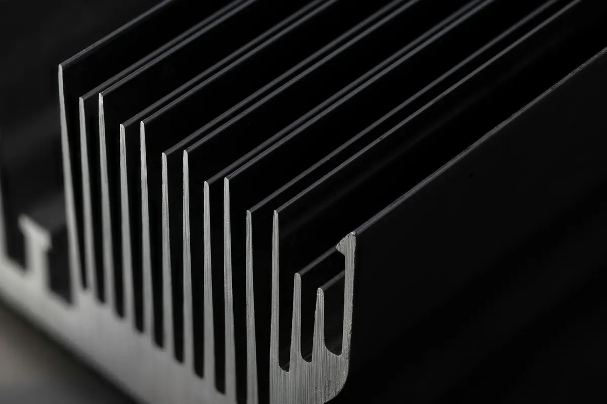

Lacado de aluminio en Legutio (Álava), cerca de Vitoria-Gasteiz
Lacado de perfiles de aluminio
Perfilería y piezas de aluminio lacadas con pintura en polvo, en el color y el acabado que necesites. Para carpintería, fachadas, mobiliario y equipos industriales, de la muestra a la serie.

- Colores
- Carta RALLisos o texturados
- Brillo
- Mate a brillante
- Longitud máxima
- [XX] m
El aluminio pide su propio pretratamiento
El aluminio se cubre de forma natural de una fina capa de óxido. Si se pinta tal cual, la pintura agarra peor y, con la humedad, puede aparecer corrosión filiforme bajo la capa: hilos que avanzan desde un golpe o un corte.
Por eso, antes de lacar, el perfil se desengrasa y recibe un pretratamiento de conversión química que estabiliza la superficie y asegura la adherencia del polvo.
Para qué perfiles
- Carpintería exterior y cerramientos.
- Fachadas, lamas, celosías y protección solar.
- Perfilería estructural y de máquina.
- Mobiliario, expositores e iluminación.
- Chapa y piezas de aluminio cortadas, plegadas o mecanizadas.
Obra de arquitectura
Muchos pliegos de arquitectura exigen un lacador con el sello QUALICOAT, que certifica el pretratamiento, el polvo y el proceso de lacado del aluminio. Si tu proyecto lo pide, indícalo al pedir presupuesto.
Para fachadas muy expuestas al sol conviene un polvo de alta durabilidad, que conserva mejor el color y el brillo con los años. Te ayudamos a elegirlo.
Antes de enviarnos los perfiles
- Marca las caras vistas: ahí evitamos las marcas de cuelgue.
- Si los perfiles llevan rotura de puente térmico, avísanos: la poliamida tiene que soportar la temperatura del horno.
- Señala taladros, roscas y zonas de ajuste que haya que enmascarar.
- Para series, envía la referencia de la sección o una muestra.
Datos de la línea
- Longitud máxima de perfil
- [XX] m
- Pretratamiento
- [a confirmar]
- Espesor de capa
- [XX]–[XX] µm
- Plazo estándar
- [XX] días
Preguntas frecuentes
¿Qué diferencia hay entre lacar y anodizar el aluminio?
El lacado aplica una capa de pintura en polvo, en cualquier color de la carta RAL. El anodizado transforma la superficie del propio aluminio en una capa de óxido protectora, con una gama de colores más corta. En JomaPaint lacamos.
¿Qué colores y acabados puedo elegir?
Toda la carta RAL Classic, lisa o texturada y del mate al brillante. Si dudas, te enviamos una placa de muestra.
¿Qué es la corrosión filiforme?
Es una corrosión en forma de hilos que avanza bajo la pintura del aluminio desde un golpe o un corte, sobre todo con humedad y sal. Se previene con un buen pretratamiento antes de lacar.
¿Lacáis perfiles con rotura de puente térmico?
[a confirmar]
¿Cuál es la longitud máxima de perfil?
[XX] m